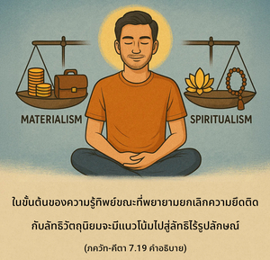

หลังจากเกิดและตายหลายต่อหลายชาติ ผู้ที่มีความรู้อย่างแท้จริงจะศิโรราบต่อข้า รู้ว่าข้าคือแหล่งกำเนิดของแหล่งกำเนิดทั้งปวง รวมทั้งสรรพสิ่งที่เป็นอยู่ ดวงวิญญาณผู้ยิ่งใหญ่เช่นนี้หาได้ยากมาก


ขณะปฏิบัติการอุทิศตนเสียสละรับใช้ หรือปฏิบัติพิธีกรรมทิพย์หลังจากเกิดมาแล้วหลายต่อหลายชาติ สิ่งมีชีวิตอาจสถิตในความรู้ทิพย์อันบริสุทธิ์อย่างแท้จริง และรู้ว่าองค์ภควานฺคือจุดมุ่งหมายสูงสุดแห่งความรู้แจ้งทิพย์ ในขั้นต้นของความรู้ทิพย์ขณะที่พยายามยกเลิกความยึดติดกับลัทธิวัตถุนิยมจะมีแนวโน้มไปสู่ลัทธิไร้รูปลักษณ์ แต่เมื่อเจริญมากขึ้นจะสามารถเข้าใจว่ามีกิจกรรมมากมายในชีวิตทิพย์ และกิจกรรมเหล่านี้รวมกันเป็นการอุทิศตนเสียสละรับใช้ เมื่อรู้แจ้งเช่นนี้เขาจะมายึดมั่นกับองค์ภควานฺศิโรราบต่อพระองค์ เข้าใจว่าพระเมตตาของ ศฺรีกฺฤษฺณ คือ ทุกสิ่งทุกอย่าง พระองค์คือแหล่งกำเนิดของแหล่งกำเนิดทั้งปวง และปรากฏการณ์ทางธรรมชาตินี้ไม่ได้เป็นอิสระจากพระองค์ เขารู้แจ้งว่าโลกวัตถุคือเงาสะท้อนที่กลับตาลปัตรจากความหลากหลายทิพย์ และรู้แจ้งในทุกสิ่งทุกอย่างว่ามีความสัมพันธ์กับองค์ภควานฺ กฺฤษฺณ ดังนั้น เขาจึงคิดถึงทุกสิ่งทุกอย่างในความสัมพันธ์กับ วาสุเทว หรือศฺรีกฺฤษฺณ วิสัยทัศน์อันเป็นสากลแห่งองค์ วาสุเทว เช่นนี้จะส่งเสริมให้เขาศิโรราบโดยดุษฎีต่อองค์กฺฤษฺณ ผู้เป็นจุดมุ่งหมายสูงสุด ดวงวิญญาณผู้ยิ่งใหญ่ที่ศิโรราบเช่นนี้หาได้ยากมาก
โศลกนี้อธิบายไว้อย่างงดงามมากในบทที่สาม (โศลก 14 และ 15) ของ เศฺวตาศฺวตร อุปนิษทฺ ดังนี้
สหสฺร-ศีรฺษา ปุรุษห์
สหสฺรากฺษห์ สหสฺร-ปาตฺ
ส ภูมึ วิศฺวโต วฺฤตฺวา
ตฺยาติษฺฐทฺ ทศางฺคุลมฺ
ปุรุษ เอเวทํ สรฺวํ
ยทฺ ภูตํ ยจฺ จ ภวฺยมฺ
อุตามฺฤตตฺวเสฺยศาโน
ยทฺ อนฺเนนาติโรหติ
ใน ฉานฺโทคฺย อุปนิษทฺ (5.1.15) กล่าวว่า น ไว วาโจ น จกฺษูํษิ น โศฺรตฺราณิ น มนำสีตฺยฺ อาจกฺษเต ปฺราณ อิติ เอวาจกฺษเต ปฺราโณ หฺยฺ เอไวตานิ สรฺวาณิ ภวนฺติ “ร่างกายของสิ่งมีชีวิตไม่มีทั้งพลังในการพูด พลังในการเห็น พลังในการได้ยิน หรือพลังในความคิดที่เป็นปัจจัยพื้นฐานดวงชีวิต คือศูนย์กลางของกิจกรรมทั้งหลาย” ในทำนองเดียวกัน องค์วาสุเทว หรือองค์ภควานฺ ศฺรี กฺฤษฺณทรงเป็นดวงชีวิตพื้นฐานในทุกสิ่งทุกอย่าง ในร่างกายนี้มีพลังในการพูด การเห็น การได้ยิน และในกิจกรรมของจิต ฯลฯ แต่สิ่งเหล่านี้จะไม่มีความสำคัญหากไม่สัมพันธ์กับองค์ภควานฺ เพราะว่าองค์วาสุเทว ทรงแผ่กระจายไปทั่ว และทุกสิ่งทุกอย่าง คือ วาสุเทว สาวกจึงศิโรราบด้วยความรู้ที่สมบูรณ์ (ภควัท-คีตา 7.17 และ 11.40)